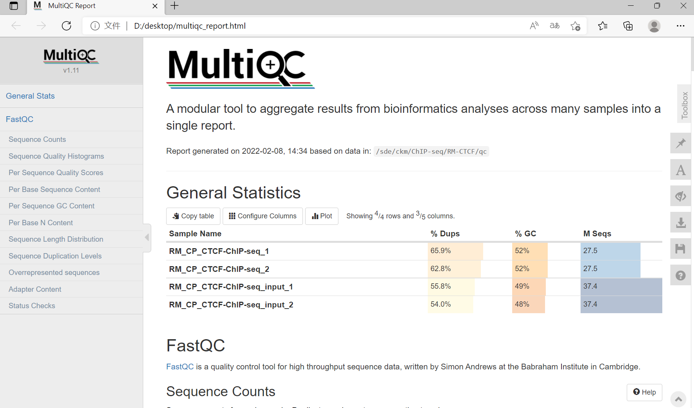
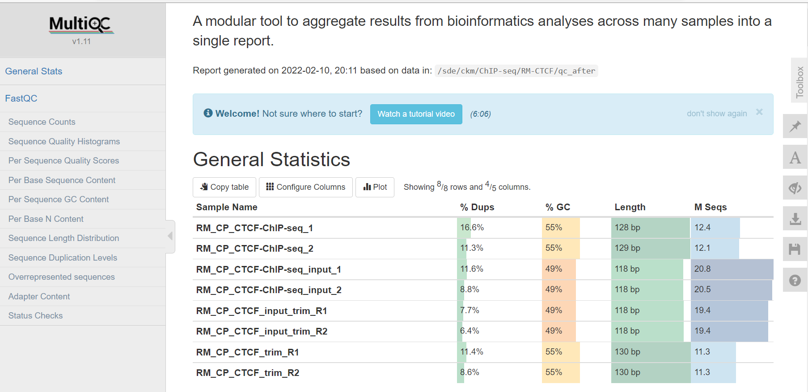
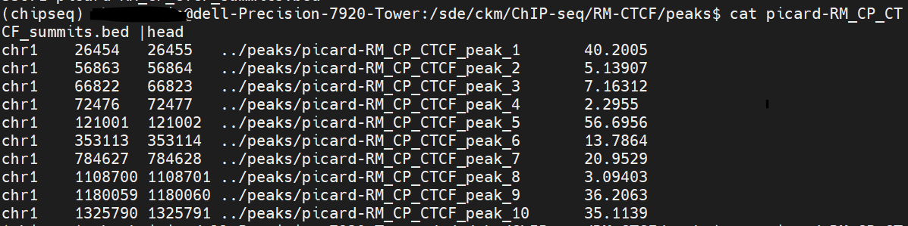
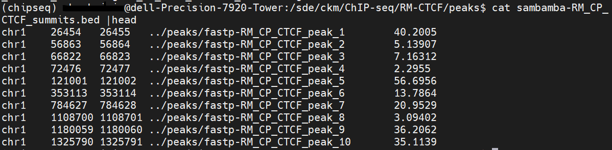

猕猴胎脑CP层ChIP-seq分析(上)
猕猴胎脑CP层ChIP-seq分析(上)
上游处理：
0、需要的软件及需要提前建的目录
|
align clean motif peaks qc qc_after raw sra TSS
|
1、下载数据
wget下载数据
1
2
3
4
5
6
7
8
9
10
11
12
|
SRR13252796
SRR13252798
source ~/.bashrc && conda activate chipseq
cd /sde/ckm/ChIP-seq/RM-CTCF
wget -c https://sra-downloadb.be-md.ncbi.nlm.nih.gov/sos3/sra-pub-run-20/SRR13252796/SRR13252796.1
wget -c https://sra-downloadb.be-md.ncbi.nlm.nih.gov/sos3/sra-pub-run-21/SRR13252798/SRR13252798.1
mv SRR13252796.1 RM_CP_CTCF-ChIP-seq
mv SRR13252798.1 RM_CP_CTCF-ChIP-seq_input
|
解压缩
1
2
3
4
5
6
7
|
fastq-dump -X 1 --split-spot -Z RM_CP_CTCF-ChIP-seq | wc -l
cd /sde/ckm/ChIP-seq/RM-CTCF/sra
nohup fastq-dump --split-3 --gzip * -O ../raw &
|
2、数据质控qc
1
2
3
4
5
6
7
8
9
10
11
12
13
14
15
| cd /sde/ckm/ChIP-seq/RM-CTCF/raw
ls *.gz |while read id; do (nohup fastqc -t 10 -o ../qc $id & );done
fastqc [-o outputdir] [--(no)extract] [-f fastq|bam|sam] seqfile1-N
multiqc ./
|

3、数据过滤
trim-galore
1
2
3
4
5
6
7
8
9
10
| cd /sde/ckm/ChIP-seq/RM-CTCF/raw
ls *gz |while read id;do (nohup trim_galore -q 20 --phred33 --length 20 -e 0.1 --stringency 4 -o ../clean $id &);done
|
fastp
1
2
| nohup fastp -i RM_CP_CTCF-ChIP-seq_1.fastq.gz -I RM_CP_CTCF-ChIP-seq_2.fastq.gz -o ../clean/RM_CP_CTCF_trim_R1.fq.gz -O ../clean/RM_CP_CTCF_trim_R2.fq.gz -w 20 --detect_adapter_for_pe &);done
nohup fastp -i RM_CP_CTCF-ChIP-seq_input_1.fastq.gz -I RM_CP_CTCF-ChIP-seq_input_2.fastq.gz -o ../clean/RM_CP_CTCF_input_trim_R1.fq.gz -O ../clean/RM_CP_CTCF_input_trim_R2.fq.gz -w 20 --detect_adapter_for_pe &);done
|
1
2
3
4
5
6
|
cd /sde/ckm/ChIP-seq/RM-CTCF/clean
ls *.gz |while read id; do (nohup fastqc -t 20 -o ../qc_after $id & );done
multiqc ./
|

4、比对bowtie2
1
2
3
4
5
6
7
8
9
10
11
12
13
14
15
|
cd /sde/ckm/index/bowtie2/mmul_8
nohup bowtie2-build --threads 10 ~/sde/ckm/reference/mmul_10/rheMac10.fa mmul10 &
mmul10.1.bt2 mmul10.2.bt2 mmul10.3.bt2 mmul10.4.bt2 mmul10.rev.1.bt2 mmul10.rev.2.bt2
cd /sde/ckm/ChIP-seq/RM-CTCF/align
nohup bowtie2 -p 20 --very-sensitive -x /sde/ckm/index/bowtie2/mmul_10/mmul10 -1 ../clean/RM_CP_CTCF_trim_R1.fq.gz -2 ../clean/RM_CP_CTCF_trim_R2.fq.gz | samtools view -@ 20 -bS -q 30 -o RM_CP_CTCF.MAPQ30.bam &
nohup bowtie2 -p 20 --very-sensitive -x /sde/ckm/index/bowtie2/mmul_10/mmul10 -1 ../clean/RM_CP_CTCF_input_trim_R1.fq.gz -2 ../clean/RM_CP_CTCF_input_trim_R2.fq.gz | samtools view -@ 20 -bS -q 30 -o RM_CP_CTCF_input.MAPQ30.bam &
nohup samtools sort -@ 20 RM_CP_CTCF.MAPQ30.bam -o RM_CP_CTCF.MAPQ30.sort.bam &
nohup samtools sort -@ 20 RM_CP_CTCF_input.MAPQ30.bam -o RM_CP_CTCF_input.MAPQ30.sort.bam &
|
5、去除PCR重复
picard
1
2
3
4
5
6
7
8
9
10
11
12
13
14
15
16
17
18
|
picard=/sde/ckm/miniconda3/envs/chipseq/share/picard-2.25.7-0/picard.jar
java -jar $picard -h
cd /sde/ckm/ChIP-seq/RM-CTCF/align
nohup java -jar $picard MarkDuplicates INPUT=RM_CP_CTCF.MAPQ30.sort.bam OUTPUT=p-RM_CP_CTCF.MAPQ30.sort.rmd.bam REMOVE_DUPLICATES=true METRICS_FILE=RM_CP_CTCF.marked_dup_metrics.txt &
nohup java -jar $picard MarkDuplicates INPUT=RM_CP_CTCF_input.MAPQ30.sort.bam OUTPUT=p-RM_CP_CTCF_input.MAPQ30.sort.rmd.bam REMOVE_DUPLICATES=true METRICS_FILE=RM_CP_CTCF_input.marked_dup_metrics.txt &
ls *p-* |xargs -i samtools index {}
samtools flagstat p-RM_CP_CTCF.MAPQ30.sort.rmd.bam> p-RM_CP_CTCF.MAPQ30.sort.rmd.bam.stat
samtools flagstat p-RM_CP_CTCF_input.MAPQ30.sort.rmd.bam > p-RM_CP_CTCF_input.MAPQ30.sort.rmd.bam.stat
cat *.stat |grep "mapped ("
27427512 + 0 mapped (100.00% : N/A)
16521250 + 0 mapped (100.00% : N/A)
|
sambamba
1
2
3
4
| nohup sambamba markdup -r -t 20 RM_CP_CTCF.MAPQ30.sort.bam RM_CP_CTCF.MAPQ30.sort.rmd.bam &
nohup sambamba markdup -r -t 20 RM_CP_CTCF_input.MAPQ30.sort.bam RM_CP_CTCF_input.MAPQ30.sort.rmd.bam &
#-r, --remove-duplicates
#-t, --nthreads
|
6、MACS2找peaks
1
2
3
4
5
6
7
8
9
10
11
12
13
14
15
16
17
18
19
20
21
22
23
24
25
26
27
28
29
30
31
32
33
34
35
36
37
38
39
40
41
42
| #picard
nohup macs2 callpeak -c p-RM_CP_CTCF_input.MAPQ30.sort.rmd.bam -t p-RM_CP_CTCF.MAPQ30.sort.rmd.bam -f BAM --nomodel --extsize 147 -g mm -n ../peaks/picard-RM_CP_CTCF -B &
#sambamba
nohup macs2 callpeak -c RM_CP_CTCF_input.MAPQ30.sort.rmd.bam -t RM_CP_CTCF.MAPQ30.sort.rmd.bam -f BAM --nomodel --extsize 147 -g mm -n ../peaks/sambamba-RM_CP_CTCF -B &
#macs2主要参数
-c：对照组
-t：实验组
-f：-t和-c的文件格式，如果不指定会自动检索
-B：更多信息保存到bedgraph中
-g：hs为human，mm为小鼠
-n：为输出文件的前缀名，可指定输出文件夹
-q：默认值为0.05，按此阈值来筛选peak
#
#bed文件:一般代表区域信息，如表示Peak位置的bed文件，表示基因注释的bed文件。
bed文件一行表示一个gene，对应信息如下:
必须包含的3列信息：
1）chrom：染色体名字 (e.g.chr3, chrY, chr2_random或者scaffold10671)。
2）chromStart：基因在染色体或scaffold上的起始位置（0-based）。
3）chromEnd：基因在染色体或scaffold上的终止位置 （前闭后开）。
可选的9列信息：
4）name：bed文件的行名。
5）score：本条基因在注释数据集文件中的评分（0-1000），在Genome Browser中会根据不同区段的评分显示对应的阴影强度（评分越高灰度越高）。
6）strand：链的方向+、-或. (.表示不确定链的方向)
7）thickStart：CDS区（编码区）的起始位置，即起始密码子的位置。
8）thickEnd：The endingposition at which the feature is drawn thickly (for example the stop codon ingene displays).
9）itemRgb：RGB颜色值（如：255,0,0），方便在GenomeBrowser中查看。
10）blockCount：bed行中外显子的数目。
11）blockSizes：逗号分割的列，数目与blockCount值对应，每个数表示对应外显子的碱基数。
12）blockStarts：逗号分割的列，数目与blockCount值对应，每个数表示对应外显子的起始位置（数值是相对ChromStart计算的）
#bdg、bw文件
导入基因组浏览器查看比对状态和突变信息。wiggle(简称wig)、bigwig(简写bw)以及bedgraph(简写bdg)只包含区域和区域的覆盖度信息，文件更小，用于可视化更方便，可以导入基因组浏览器（Genome Browser）中进行可视化，以查看reads在参考基因组各个区域的覆盖度并检测测序深度。
wiggle：展示区域的密度或强度信息，如GCpercent, probability scores, and transcriptome data.
bedGraph: bed与wig的结合，更省空间和灵活，展示信息与wig类似。 (bedGraph的格式一般有四列，Chr、start、end和value，并且坐标是以0为起始左闭右开)
bigWig: wig文件的二进制压缩格式，可通过wigToBigWig工具转换
#
#结果
wc -l picard-RM_CP_CTCF_summits.bed
33671 picard-RM_CP_CTCF_summits.bed
#结果
wc -l fastp-RM_CP_CTCF_summits.bed
33671 fastp-RM_CP_CTCF_summits.bed
#picard结果和sambamba结果一毛一样
|

